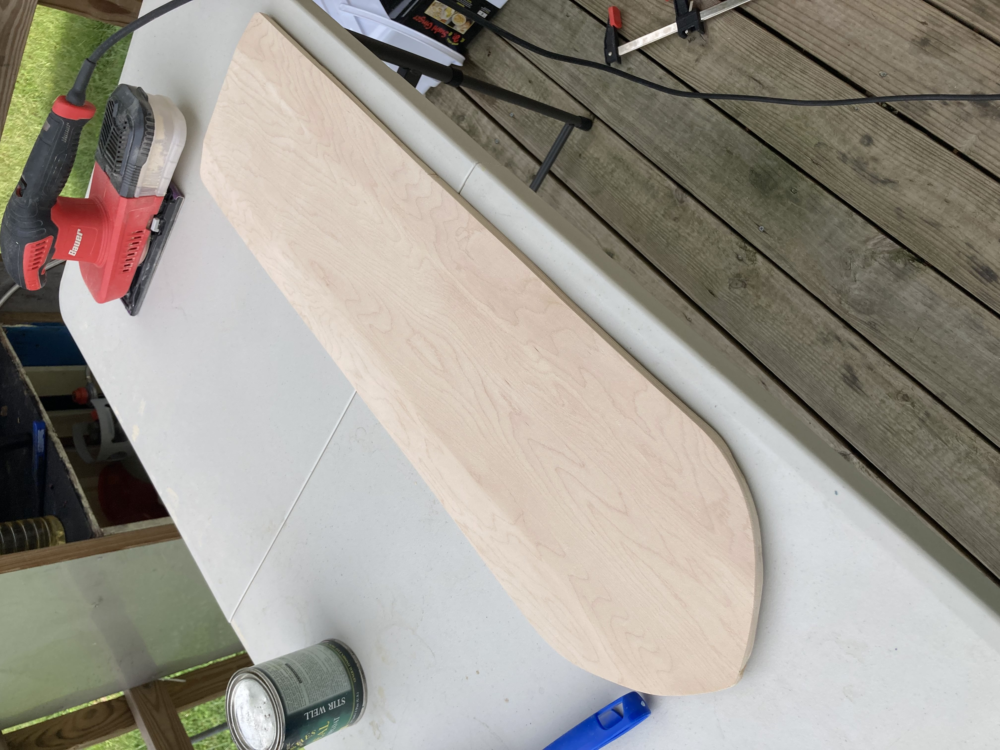

Personal Project
August 2021
This longboard bumper protects the shape of the longboard from crashes... and from you.
Background
My friend accidentally rammed my beautiful longboard straight into a wall ㅠㅠ. So I had to preserve the longboard from further damages.

Iteration
I traced the dimensions of my longboard nose into Fusion360, which I then made a mold to pour polyurethane, a durable rubble like plastic that can withstand the multiple impacts and the elements.

3D model of the mold
The nose was then routed to have grooved channels for the polyurethane bumper to physically attach to. Additional polyuretane was applied to the channel and bumper to ensure the bumper never comes off.
3D model of the mold